Поговорим о легендах в игре
Бладхаунд
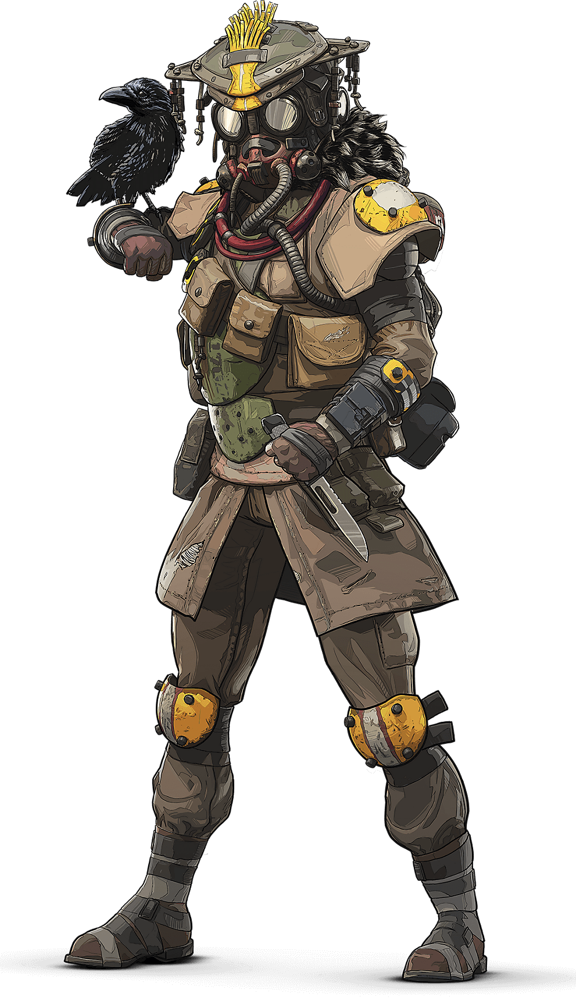Этот персонаж не выделяется особыми скилами, у него есть легальное вх, его ультимативная способность это усиление собственных навыков ,игрок на мониторе видит серую картинку, вражеские легенды подсвечиваются красным цветом, а также видны их следы. Его хитбокс относится к средним по нему не трудно попасть. Впринципе им можно играть. Моя оценка 4 из 10, есть гораздо более играбельные герои.
Гибралтар
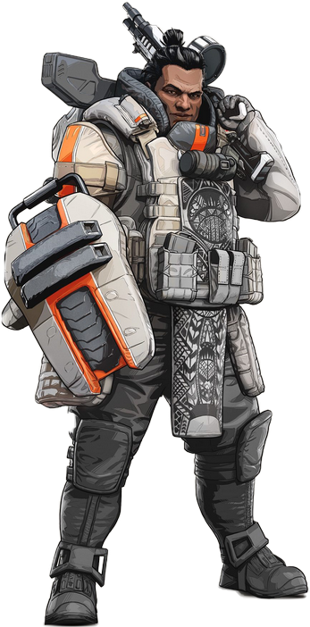Гибралтар настоящий танк. Он очень хорош в защите, особенно в лейт гейме. Его ультимативная способность "Орбитальная бомбардировка" с неба падают ракеты вражеским персонажам наносится мощьный урон по щитам, а также замедляет их.Ульта очень хорошо сочитается со способностью на q, ты просто кидаешь купол и в него ульту по вам урон не проходит, а по врагам - да. Я ставлю этому герою 8/10. классный персонаж хорошо подходит для новичков из-за его пассивного щита (дает 25 доп.очков к защите.)
Лайфлайн
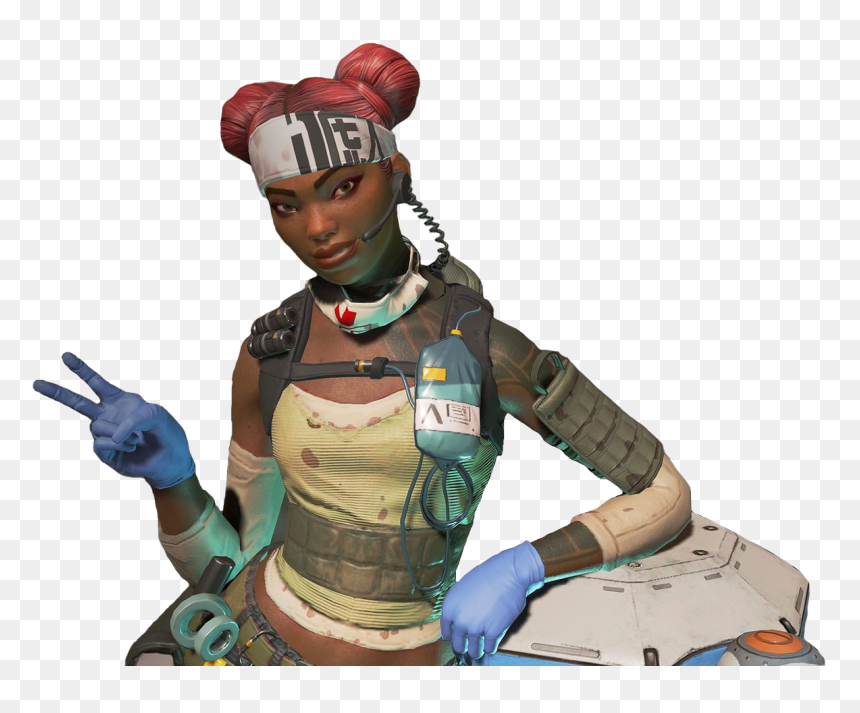Лайфлайн - это единственный медик в игре. способность на q - это вызов дрона "Д.О.К." он появляется и лечит ближайщих тиммейтов. Ультимативная способность вызов припасов позволяет запросить припасы с воздуха. Также ДОК может сам реанимировать союзников при этом выставляя щит. Очень хороший персонаж для новичка, сапорт чистой воды. Я поставлю ей 8/10 очень хороша для новичка.
Патфайндер
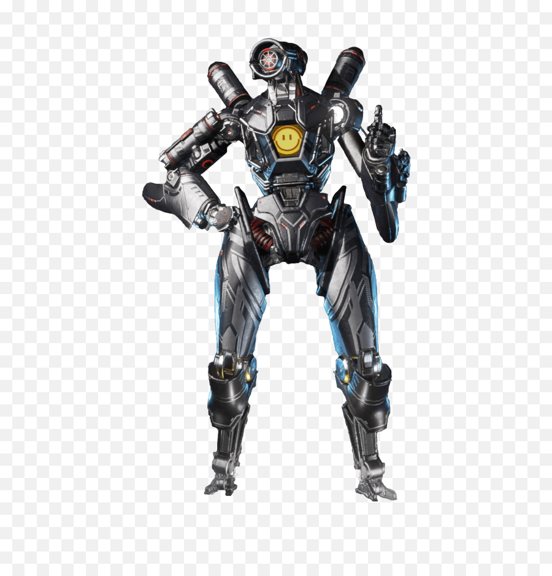Патфайндер - неуловимый робот разведчик.
Тактическая - крюк-кошка
помогающая добраться до возвышенностей и пересекать природные препятствия.
Ключевая фишка персонажа, которая помогает ему выделяться среди большинства остальных героев.
Любопытная вещь: разогнавшись на канате, робот получает небольшой, но ощутимый импульс к движению
после посадки.
Пассивная - внутреннее знание
Сканирует маяк и определяет следующее местоположение кольца. Остается
только найти маяк... По факту, в зону игроки Apex Legends и так успевают, особенно если в команде
есть Патфайндер с его крюком-кошкой.
Ультимативная способность - тросомет
которым может воспользоваться любой игрок. Отличная вещь для
поздней стадии матча. Размещаем тросомет на самую высокую точку круга, тащим туда союзников и
спокойно отстреливаем любую суматоху под ногами. Патфайндер может не только обеспечивать команде
комфортную позицию, но и спасать от штурма или доставлять игроков в круг, если они замешкались и не
успели туда попасть вовремя. Моя оценка этому герою 9/10, на нем весело играть и впринципе он хорош.
Рейф
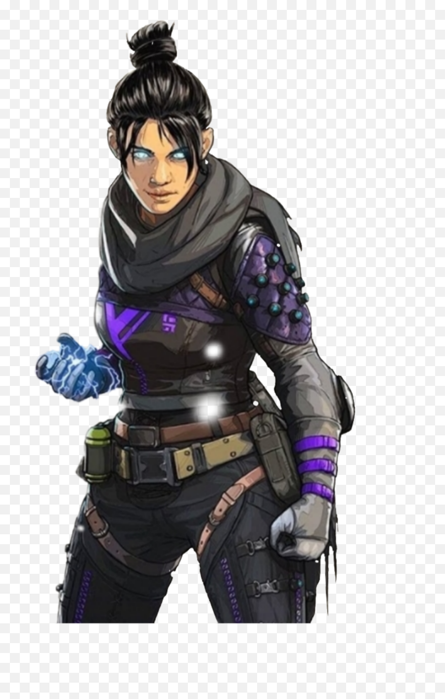Рейф гиперболический супер соник она бегает как нарута, а выглядит как хокаге. в новом патче ей утолщили хитбокс, теперь он толще. Голос из пустоты. Пассивный навык, который шепотом предупреждает о том, что герой попал в прицел противников В пустоту. Активная способность, позволяющей Рэйф искривлять пространство и уходить из поля зрения противников Разлом. Ультимативная способность, с помощью которой персонаж открывает два портала. Моя оценка 9/10 т.к когда за тебя заходит мейнер рейф это уже легкие топ 5, но этот персонаж несовсем подходит для новичков.
Каустик
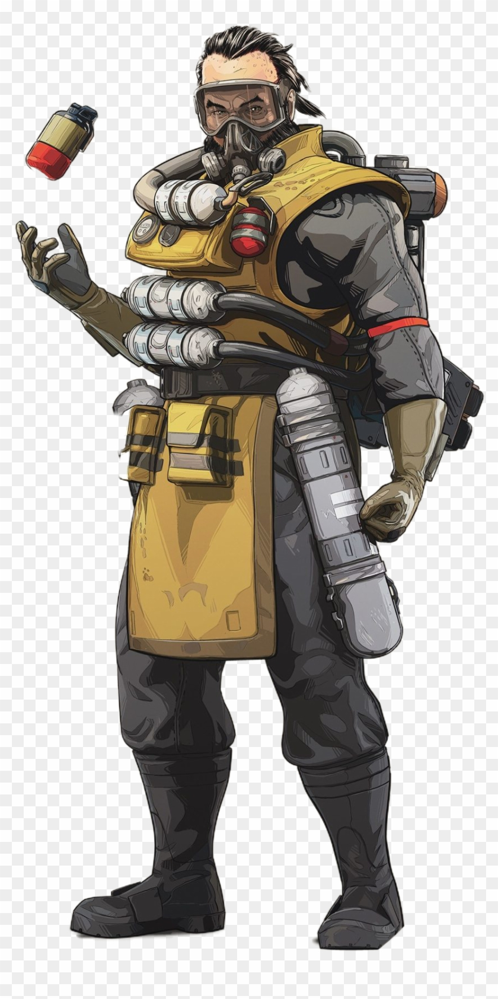Каустик отличный оборонительный герой. Он выбрасывает бочки с пердежным газом который наносит небольшой дамаг через щиты. можно выкинуть только 6 бочек в общем. С помощью этих бочек можно неплохо выпушивать здания. Его ульта также выпускает пердежный газ, но на более большую область. Я являюсь мейнером этого персонажа. Моя оценка 8/10 он реально неплох, но не подходит для новичков.
Мираж
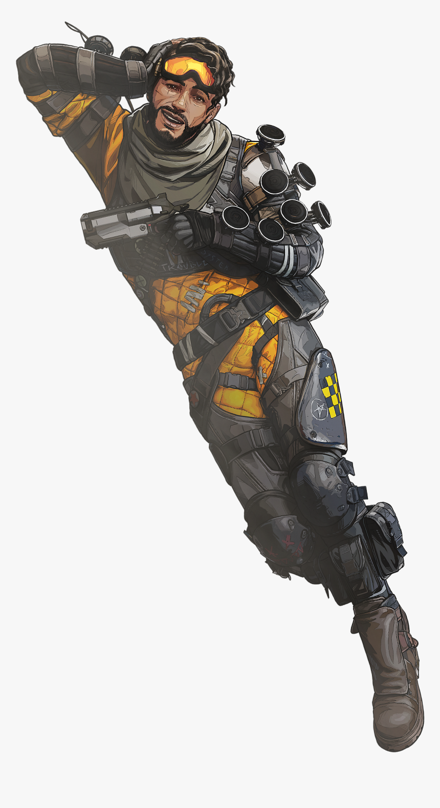Пассивная способность, которая автоматически создает голографическую приманку и скрывает Миража,
сразу же после нокаута. Функция ровно одна - запутать противника и дать тебе время отползти
поближе к тиммейтам для восстановления здоровья.
Тактическая способность, позволяющая вызвать одну голограмму и отправить ее в заданном
направлении. Очень полезно в ситуациях, когда нужно заставить вражеский отряд выдать свою точку
расположения. С высокой вероятностью кто-то из оппонентов откроет огонь, а ты, тем временем,
можешь атаковать с противоположной стороны или вовсе обойти угрозу без лишнего шума.
Ультимативное умения Миража создает сразу несколько приманок и скрывает своего обладателя на
некоторое время. Если тебя загнали в угол с низкими показателями здоровья или атакуют с
нескольких сторон - стоит сразу же использовать эту способность. То же самое касается сражений
на поздних этапах матча с неполным отрядом. Пока враги заняты другими членами твоей команды
можно застать их врасплох.
Октан

Скорая поправка
Пока не находится в бою и не получает урона — Октан восстанавливает 1 единицу здоровья раз в 2
секунды
Это довольно неплохая пассивная абилка, хотя также нельзя ее назвать прекрасной просто потому
что восстановление 1хп в 2 секунды — это все-таки слишком медленно. Этого будет достаточно и
полезно в самом начале игры, когда у вас не хватает аптечек. Однако по мере сужения карты и
пространства для маневра — абилка будет все более и более бессмысленной, т.к. в условиях боя в
ограниченном пространстве — вам будет сложно выйти из комбата что бы она хотя-бы заработала.
Скорее всего вы как пользовались аптечками и восстановлением для щитов — так и будете этим
пользоваться — эти предметы уж точно ценность не потеряют.
Тактическое умение «Стимулятор»
Октан начинает двигаться на 30% быстрее на протяжении 6 секунд. Тратит здоровье при
использовании. Пока абилка активна — эффект негативных замедляющих способностей, применяемых
противником в отношении Октана снижен. Перезарядка 2 секунды.
Идея данной способности очень интересная, но нужно учитывать что вы будете нести реальные потери
в хп пока юзаете ее. Стимулятор хорошо сочитается с пассивным скилом Октана. Именно эти два
умения делают Октана агрессором и дамагером. Вы можете легко и быстро перемещаться по карте,
меняя свою позицию и не боятся что вас остановят.Также есть один малоизвестный факт — если вас
ранили и вы используете пулемет с тяжелыми припасами (любое оружие с тяжелыми патронами) — вы
замедлитесь. Однако указанный скил фактически сводит на нет этот негативный эффект.
Абилка перезаряжается всего за 2 секунды, что позволяет вам использовать ее очень часто, что в
свою очередь делает ее очень полезной.
Если запас вашего здоровья низок — вы будете использовать «стимулятор» без потери здоровья. Вы
не сможете совершить суицид.
Ульт «Батут»
Позволяет установить пусковую площадку (батут), используя который, игроки смогут прыгать на
огромные расстояния. Перезарядка 90 секунд.
Эта способность не запустит вас так далеко, как вы могли подумать. Скорее данная способность
подходит к ситуациям, когда вы уже ведете перестрелку с противником, однако хотите оперативно
поменять свое местоположение или сбежать из боя. Проблема состоит в том, что как и в случае с
другими способностями легенд — батут может быть использован как вами — так и вашими
противниками. Поэтому если ваш враг преследует вас по пятам и вы решили сбежать от него именно
таким способом — ничего не получится. Также 90 секунд перезарядки совсем не радуют.
Моя оценка 8/10 персонаж создан для фана. Веселье и только Веселье.
Ваттсон
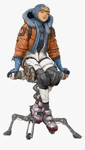Искра гениальности
Пассивное умение Ваттсон позволяет ей перезаряжать основное умение с помощью одного специального
ускорителя, а также увеличивает его восстановление в радиусе действия «Перехватывающего столба».
Сложно назвать данный навык невероятно полезным, но он гарантирует практически постоянный доступ
к блокировке воздушных атак Бангалор и Гибралтара.
Периметровая защита
Тактическое умение Ваттсон создает несколько связанных электрических барьеров, отнимающих заряд
щитов и здоровье у противников. Игрок также будет оповещен обо всех столкновении с забором, как
и в случае с активацией бочек с газом Каустика. Восстановление умения не занимает слишком много
времени, что позволяет ограничить проникновение в здание со всех сторон на поздних этапах матча.
Перехватывающий столб
При активации специальной способности Ваттсон устанавливает электрический генератор, который
уничтожает летящие взрывоопасные снаряды и восстанавливает щиты всем союзникам до того момента,
пока не будет нейтрализован. Максимальное количество одновременно размещенных устройств – 3.
Моя оценка 10/10 мощный перс, всем советую научится на ней играть.
Крипто
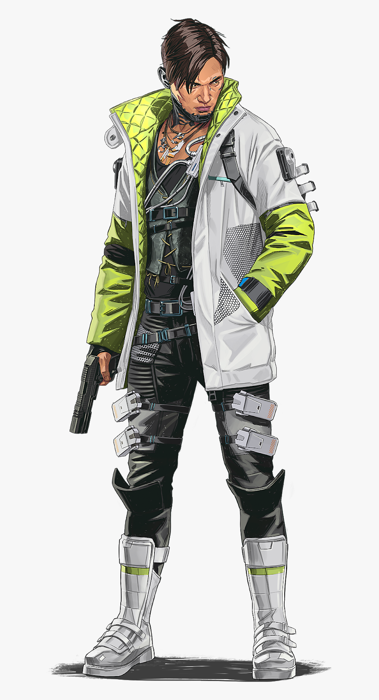Нейросвязь
Пассивное умение Крипто помечает всех противников в радиусе 30 метров от дрона, когда он
находится в «активной фазе», то есть под непосредственным управлением игрока. Отметки также
видны всем членам отряда. Фактически, способность работает по аналогии с «сонаром» Бладхаунд, но
не расходует дополнительного времени на кулдаун и работает на огромной дистанции.
Разведывательный дрон
Тактическое умение Крипто позволяет ему запустить разведывательного дрона, способного
перемещаться во всех плоскостях на большие расстояния (радиус действия отмечен на специальной
шкале). В случае уничтожения робота потребуется 40 секунд перезарядки, чтобы послать следующего.
В момент активации герой остается на той же позиции и уязвим для любых внешних атак.
ЭМИ дрона
Специальное умение Крипто переводит разведывательный дрон в атакующий режим. После процесса
«зарядки» продолжительностью в несколько секунд, он выпускает мощный ЭМИ-разряд, который наносит
урон по щитам, замедляет противников и выводит из строя ловушки легенд из класса «Защиты».
Моя оценка 9/10 годный разведчик, жаль что не совсем для новичков.
ревенант
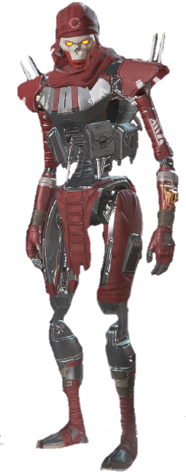Ловец
Пассивное умение Ревенанта позволяет ему двигаться быстрее в положении сидя (чуть быстрее
обычного перемещения без использования «спринта») и забираться по стенам и другим вертикальным
объектам выше других легенд. Фактически, это позволяет персонажу бесшумно подкрадываться к
противникам и пробивать оборону неприятеля. Однако «Ловец» практически бесполезен в пылу боя,
поскольку герой остается очень уязвимым во время анимации подъема по стене (особенно в ее
финальной части).
Немота
При активации тактического умения Ревенант бросает устройств-сферу, которое наносит 10 единиц
урона всем противникам в радиусе его действия и блокирует возможность применять любые активные
способности на 10 секунд. Таким образом, соперник не сможет размещать ловушки, щиты, порталы и
зип-лайны, а также останется без поддержки с воздуха.
Тотем смерти
Специальное умение Ревенанта призывает тотем, защищающий использующих его игроков в течение
некоторого времени. Вместо смерти или нокаута они вернутся к тотему. Зона действия артефакта
ограничена (радиус отображается при активном баффе). Все пользователи могут применять каждое
устройство (в том числе и тотемы противника) по одному разу. Под действием усиления герои могут
использовать все свои умения и оружие, однако не способны восполнять щиты и полоску здоровья.
Моя оценка 8/10 классный перс, мой будуюший мейн герой.
Лоба
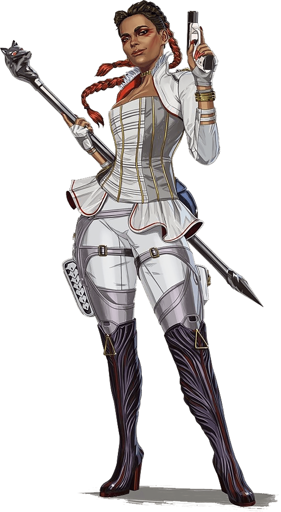Глаз-алмаз
Пассивное умение Лобы позволяет обнаруживать выскооуровневый лут сквозь стены, препятствия,
контейнеры и другие объекты. Исключением являются лишь воздушные припасы — узнать об их
содержимом на расстоянии не удастся.
Фактически, это помогает быстрее получить необходимые предметы на старте матчей и зачищать
дальнейшие локации в сессии быстрее отрядов соперника. В отличие от специальной способности
Бладхаунд, помечающей цели для всех союзников, обозначения будут доступны лишь игроку,
управляющему легендой.
Лучший друг взломщика
При активации тактического умения Лоба бросает свой браслет по выбранной траектории и
перемещается вслед за ним на конечную точку (можно сократить расстояние телепортации в процессе
полета предмета, зажав кнопку «выстрела»). Как и в случае с «В пустоту» Рэйф, за игроком
остается характерный след в воздухе, позволяющий обнаружить место дислокации.
Бутик черного рынка
Специальное умение Лобы активирует доступ к меню «черного рынка», из которого можно осмотреть
все предметы, находящиеся неподалеку, и переместить два их них в инвентарь. Радиус действия
способности указан с помощью выделения области на мини-карте.
Все пользователи могут применять каждое устройство (в том числе и устройства противника) по
одному разу. Его также можно разрушить.
Хорайзон

Выход в открытый космос
пассивный С помощью своего опыта в области гравитации Горизонт создал
специальный костюм, который позволяет ей эффективно маневрировать в середине. — воздух при
прыжках или падениях с усиленным контролем над воздухом.
Это также уменьшает удар при падении или оглушение при падении, что означает, что она теряет
минимальное количество инерции при приземлении.
Гравитационный лифт тактическая способность В качестве тактической способности Horizon обладает
устройством типа гранаты, которое: при броске создает антигравитационное силовое поле, чтобы
поднять в воздух друзей и врагов.
Вы можете использовать эту способность, чтобы мгновенно и легко подняться на высоту, и,
поскольку она влияет на всех, кто соприкасается с ней, вы можете бросить ее во врагов, чтобы
поднять их вверх и дезориентировать.
Кроме того, это дает вам усиление наружу при выходе из него. Силовое поле длится всего 15
секунд, после чего вам нужно будет бросить еще одно из этих гранатометов.
Черная дыра — Ultimate Ability Для максимальной способности Horizon использует ее
робот-компаньон Ньют, чтобы создать небольшую черную дыру, которая может притягивать и
удерживать окружающих врагов в своем районе, чтобы вы могли пролить на них свинец.
Фьюз

Пассивное умение - Гренадер
Пассивная способность Фьюза технически позволяет ему делать две вещи вместо одной. Прежде всего,
это позволяет ему держать одну дополнительную гранату на слот инвентаря, что, несомненно,
вызовет головную боль для вражеских команд в ограниченном пространстве.
Во-вторых, Фьюз может запускать эти гранаты дальше, быстрее и точнее, чем другие Apex Legends,
благодаря своей пассивной способности.
Это делает его опасным как в ближнем бою, так и в дальних схватках.
Тактическое умение - Кассетный кастет
Метко названный Knuckle Cluster запускает кассетную бомбу из искусственной руки Фьюза. При ударе
он выпускает взрывчатые вещества, которые непрерывно взрываются на небольшой площади.
Это был бы абсолютный кошмар для любой Apex Legends, которая застряла в способности Horizon
Black Hole, за исключением, возможно, Wraith.
Специумение - Джектоп
Здесь все становится немного более напряженным. Абсолютная способность Фьюза, The Motherlode,
позволяет ему стрелять бомбардировкой, которая обрушивает взрывчатку сверху в целевой области.
Эта способность не только вызывает дождь из взрывчатки, но также создает круг пламени,
окружающий врагов, ограничивая их возможности побега. Здесь пригодятся Gravity Lift от Horizon и
Launch Pad Octane.